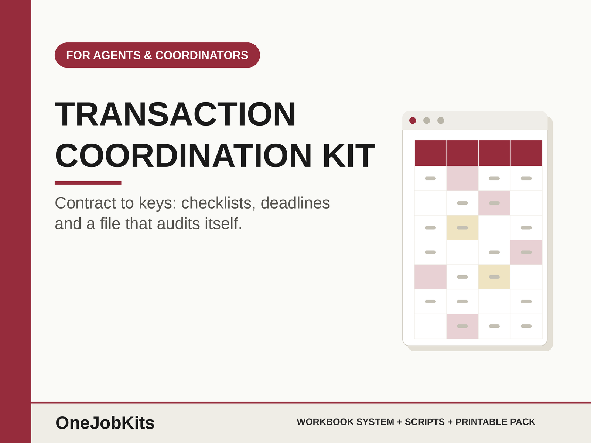

OneJobKits · Kit #30
Real Estate Transaction Coordination Kit — transaction coordinator checklist

A transaction rarely falls apart on one big mistake. It frays: an inspection deadline nobody circled, a document the file still needs two days before closing, a client who has not heard anything in a week and starts to worry. A serious transaction coordinator checklist is the defence — every task, deadline and document for every deal in one system that watches the dates itself instead of relying on one person's memory.
This page gives you the spine of that system free: the Contract-to-Close Mini Checklist. Below it is the full kit it comes from — intake, pipeline, the 42-task checklist, a deadline tracker whose status updates from the dates, a communication log, a file audit, and the email scripts for the messages a coordinator sends all day. It is administrative aids only: there are no contract templates and no legal documents in this kit, and nothing in it is legal advice.
Free download — start with the Contract-to-Close Mini Checklist
The FREE Contract-to-Close Mini Checklist is a fillable PDF covering the 15 moves from signed to closed — the mini checklist described on Gumroad as the 15 moves from signed to closed. Print it or fill it on screen for the deal you are running now: the essential path from contract to keys on one short checklist, so a live file can be steadied today, before any system is set up.
Download the free Contract-to-Close Mini Checklist (PDF)Get it on Gumroad instead
What the free mini checklist does not do: it follows one deal through 15 moves, on paper. It does not watch 30 deals at once, count down their days to closing, flag a deadline as overdue by itself, audit a file against 29 standard documents, or draft the day's client emails. The full system below does all of that, in one workbook built for a coordinator's whole pipeline.
What's inside the full system
- Coordination workbook (spreadsheet, 7 tabs; Excel + Google Sheets, no macros) — Start Here · Client Intake — 20 fields captured once, properly, at the start of the file · Transaction Pipeline — up to 30 deals in flight, with days to closing that count themselves from the closing dates · Contract-to-Close Checklist — 42 tasks in 9 phases, each task with an owner and a due date, and a Done counter that keeps the score · Deadline Tracker — 16 standard milestones per deal; the status reads Done, OVERDUE, DUE SOON or On track from the dates you enter, so a slipping deadline announces itself · Communication Log — 60 rows per file for calls, emails and updates, so who was told what, and when, is a record · File Audit — 29 standard documents marked Received or Still needed, with automatic counts of both
- Printable Coordination Pack (fillable PDF, 8 pages, 103 fields) — intake, checklist, deadline tracker, file audit sheet, closing-day page and communication log in paper form, for the desk and the file
- Client & Partner Email Scripts (PDF, 12 scripts) — the recurring messages of a transaction, written to adapt: welcomes, document requests, inspection and appraisal updates, the weekly update, closing day — including a wire-safety warning script, because the fraud warning is a message a coordinator really sends
- Disclaimer (PDF, 1 page) — the kit's own boundary, as its own document: administrative aids only, no contract templates, no legal documents, no legal advice
- Setup Guide (PDF, 3 pages) — what is inside, setup for Excel and for Google Sheets, and the working rhythm that keeps pipeline, deadlines and files current
- Worked example files (Excel + Google Sheets) — the workbook filled in with a fictional sale in mid-flight, so the counters and statuses can be seen working before a real deal depends on them (shown below)
- Pro ($199) adds: the Team & Brokerage Pack workbook pair (Excel + Google Sheets) — Agent Roster, Team Pipeline Summary and Commission Records — plus the Advanced Scripts Pack: 12 more scripts for the harder days, such as delays, low appraisals and deals that need difficult news delivered clearly. Commission Records are records only, not tax or accounting advice
A filled example — so you can see the finished thing
The kit's worked example follows a fictional sale — the Webb family sale at 14 Sunset Ridge Lane, Columbus OH, priced at $412,500 with a closing date of 14 Nov 2026 — caught in mid-flight, exactly where coordination matters most. The family, the address and the deal are invented, and the example file says so; what the file demonstrates is the system telling the truth about a live file:
| From the example file | The deal, mid-flight |
|---|---|
| Contract-to-Close Checklist | 13 of 42 tasks marked Done — the counter's honest score for a deal part-way from signed to closed, with the remaining phases still ahead of it |
| Inspections and appraisal | Both inspection repairs agreed, and the appraisal ordered — two of the milestones a buyer, a seller and two agents are all waiting on, recorded once for everyone |
| File Audit | 9 of 29 documents marked Received and 20 still Missing — the audit's automatic counts, naming the gap while there is still time to close it |
| Transaction Pipeline | The Webb sale plus two more deals on the pipeline — because a coordinator's real problem is never one file, it is every file's deadlines landing in the same week |
That mid-flight honesty is the product: not a prettier list, but a file that can say — tasks done, documents missing, deadlines close — before any of it becomes a phone call nobody wanted to make.
Who it is for
Transaction coordinators, agents who coordinate their own files, and small brokerage teams who run several deals at once and need tasks, deadlines, communications and file completeness visible in one system — and who already work with proper contracts and disclosures supplied through their broker and their attorney.
Who it is not for
Anyone looking for contract templates, legal documents, disclosure forms or legal advice. There are none in here, deliberately and completely. Contracts and disclosures are drafted or reviewed by a licensed attorney and your broker, and state rules govern your transactions; this kit organises the administration around those documents and never replaces them.
Questions buyers ask
- Does this kit include contract templates or legal documents?
- No — none at all. There are no contract templates, no disclosure documents and no legal forms anywhere in this kit, and nothing in it is legal advice. It is administrative aids only: checklists, trackers, logs, an audit sheet and email scripts. Contracts and disclosures are drafted or reviewed by a licensed attorney and your broker, and state rules govern the transaction.
- How does the Deadline Tracker watch itself?
- Each deal carries 16 standard milestones with their dates. The tracker compares those dates with today and with whether the milestone is marked done, and the status reads Done, OVERDUE, DUE SOON or On track. You enter honest dates and keep the done marks current; the flagging then happens by itself instead of living in one person's memory.
- What is in the 42-task checklist?
- The Contract-to-Close Checklist holds 42 tasks arranged in 9 phases, and each task carries an owner and a due date, with a counter that totals how many are marked Done. In the worked example, a fictional sale in mid-flight reads 13 of 42 tasks Done — the checklist shows progress and what remains in the same view.
- How does the File Audit work?
- The File Audit lists 29 standard documents for a transaction file. Mark each one Received or Still needed and the sheet counts both automatically. The worked example reads 9 documents Received and 20 still Missing — a gap stated as a number while there is still time before closing to close it.
- What email scripts are included?
- The base kit includes 12 Client and Partner Email Scripts covering the recurring messages of a transaction — welcomes, document requests, inspection and appraisal updates, the weekly client update, closing day and a wire-safety warning. Pro adds the Advanced Scripts Pack with 12 more scripts written for harder days, such as delays and difficult news.
- What does Pro add?
- Pro adds the Team and Brokerage Pack workbook pair, in Excel and Google Sheets — an Agent Roster, a Team Pipeline Summary and Commission Records — plus the Advanced Scripts Pack of 12 additional scripts. Commission Records are records only: they are not tax or accounting advice, and they do not calculate anyone's taxes.
- What does the free mini checklist cover, and what does the full kit add?
- The free Contract-to-Close Mini Checklist is a fillable PDF with the 15 moves from signed to closed for one deal. The full kit runs the whole pipeline: intake with 20 fields, up to 30 deals with days to closing counted automatically, 42 tasks in 9 phases, 16 milestones per deal with self-watching status, a 60-row communication log, a 29-document file audit, 12 email scripts, the printable pack and the setup guide.
Prices
Base: $149 · Pro (adds the Team & Brokerage Pack and the Advanced Scripts Pack): $199 — one-time payment, digital download. No subscription; the files are yours.
Can't find the kit you need?
We build it. Ask us — first asker gets it at half the shelf price. Tell us the job at onejobkits.com and we will build the kit for it.
Related kits
Please know: these are administrative aids only — there are NO contract templates and NO legal documents in this kit, and nothing in it is legal advice. Contracts and disclosures must be drafted or reviewed by a licensed attorney and your broker, and state rules govern your transactions. Commission Records are records only, not tax or accounting advice. All example data is fictional (the Webb family sale is invented, and the example file says so).